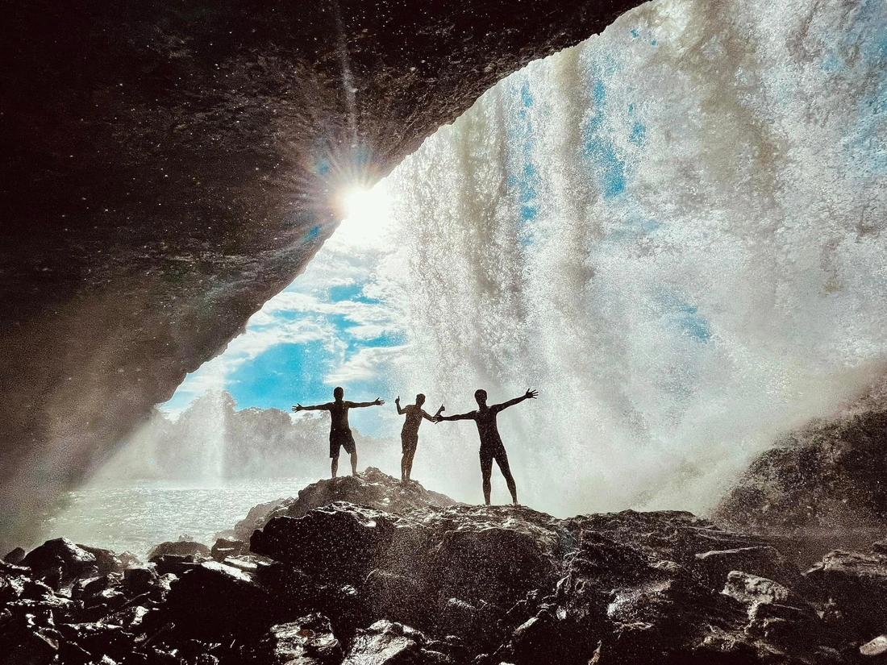
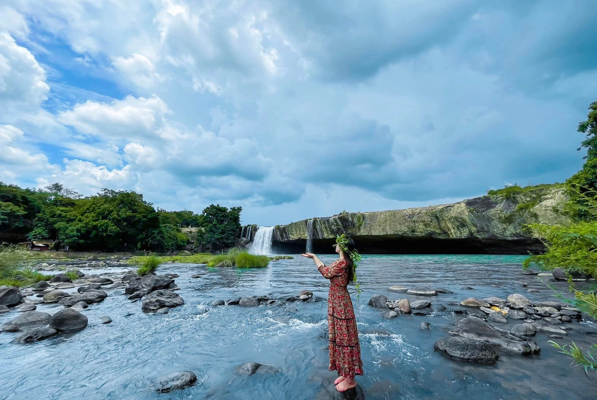

Khám phá mảnh đất Tây Nguyên hoang sơ
 Nhắc đến Buôn Ma Thuột, ta nghĩ ngay đến những nếp nhà rông truyền thống, những ánh lửa bập bùng bên điệu múa cồng chiêng hoang dã và vườn cà phê bạt ngàn trên nền đất đỏ bazan màu mỡ.
Buôn Ma Thuột được biết đến với bản sắc văn hóa rất phong phú, là nơi sinh sống của cộng đồng hơn 40 nhóm dân tộc thiểu số. Nếu bạn yêu thích du lịch khám phá, gần gũi với thiên nhiên, Buôn Ma Thuột sẽ không làm bạn thất vọng. Không nổi tiếng với các dịch vụ du lịch giải trí, mảnh đất này làm say đắm lòng người bởi những khu rừng kỳ bí, những cánh đồng cà phê bạt ngàn, những ngọn thác thơ mộng và những điểm du lịch hoang sơ, bình dị... Anh Trần Hoài Nam (sinh năm 1989, giáo viên tại địa phương) chia sẻ, đến với Buôn Ma Thuột du khách sẽ có những trải nghiệm đặc trưng chỉ có ở nơi đây, như thưởng thức cồng chiêng, uống rượu cần, đốt lửa trại, ở nhà sàn cùng đồng bào dân tộc... Đặc biệt an ninh rất tốt, con người thân thiện, nhiệt tình mến khách, các món ăn hấp dẫn, thiên nhiên vừa hùng vĩ vừa thơ mộng gây lưu luyến lòng người. Về thời tiết, Buôn Ma Thuột mang khí hậu đặc trưng của vùng đất Tây Nguyên với hai mùa mưa và mùa khô rõ rệt. Thời gian phù hợp nhất để du lịch Buôn Ma Thuột là vào mùa khô từ tháng 12 đến tháng 4 năm sau. Lúc này không có mưa, dịu mát, chưa quá nóng nực. Đây cũng là thời gian diễn ra các lễ hội của đồng bào dân tộc. Tháng 12 có hoa dã quỳ rực rỡ, tháng 2 đến tháng 3 có hoa cà phê thơ mộng. Mùa mưa từ tháng 5 đến tháng 11, gây khó khăn di chuyển ở một số tuyến đường đất xa trung tâm.
{kind=link}
{kind=link}